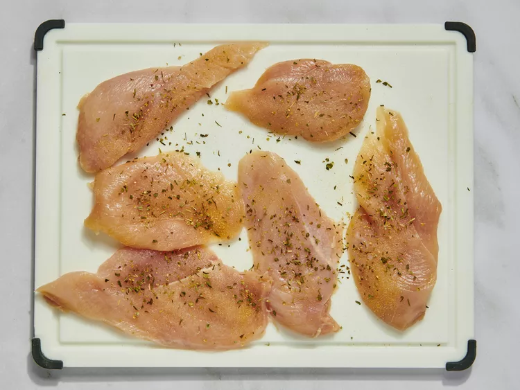
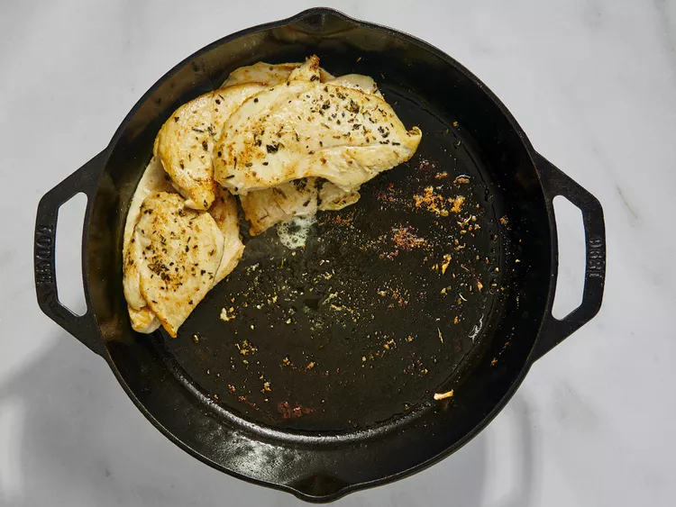
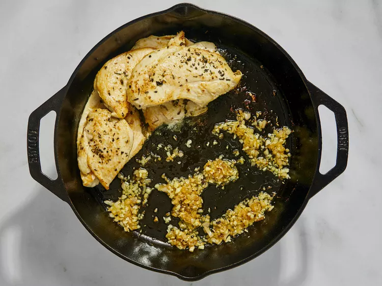
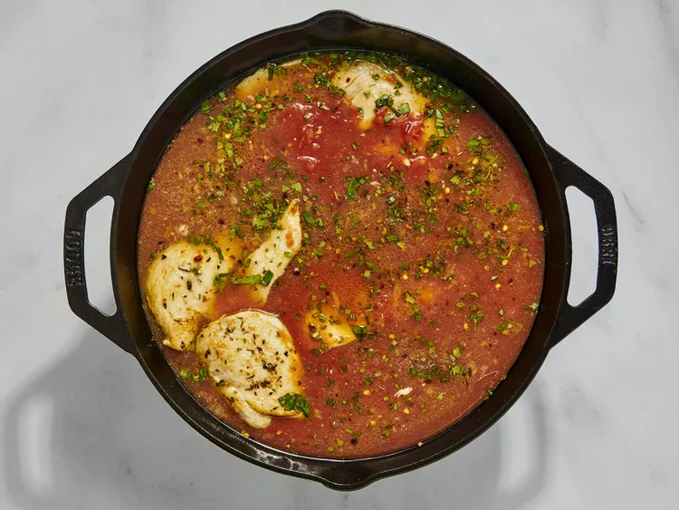
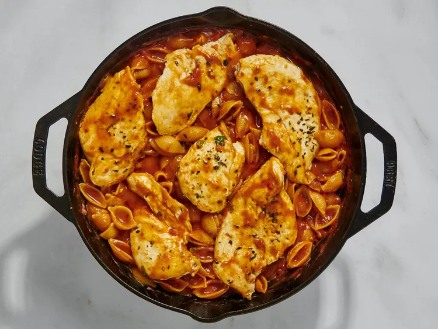

This one pot chicken pomodoro has a bright fresh flavor and is a fabulous weeknight meal. Pair with a salad to round out dinner.
Gather all ingredients. Heat a deep cast iron skillet over medium heat.
Season chicken breasts with salt, garlic, and Italian seasoning.
Pour 2 teaspoons oil into the skillet. Once hot, add chicken. Cook until golden, turning once, about 4 minutes per side. Move chicken to one side of the skillet.
Pour remaining oil into the skillet. Add minced shallot; cook until softened, about 3 minutes. Add the garlic, stir until fragrant, about 1 minute.
Add the crushed tomatoes, salt, sugar, red pepper flakes, and basil. Pour in chicken broth and wine. Stir to combine.
Add pasta to the skillet. Nestle chicken pieces on top of pasta. Reduce heat to medium-low. Cover, and cook until pasta is tender with a bite, about 8 minutes. Taste and adjust seasoning; serve immediately.
